Префектура Сага · Карацу · рёкан
Yoyokaku в Карацу: рёкан, где ужин подают в керамике Карацу
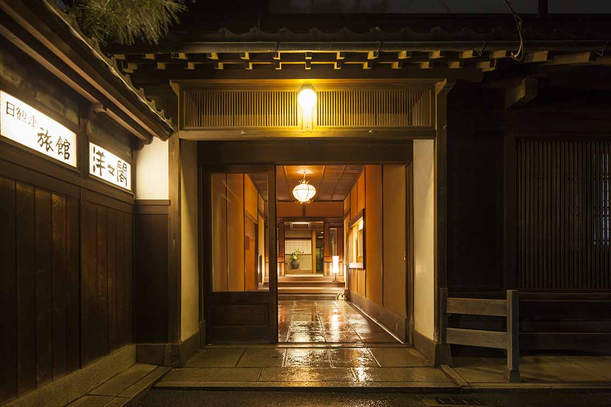
Карацу на севере префектуры Сага известен на всю Японию своей керамикой. У сосновой рощи на берегу моря стоит рёкан Yoyokaku, где ужин подают в посуде лучших местных мастеров, а саму посуду можно купить в галерее по дороге из бани.
Город
Карацу: порт, через который пришла керамика
Японские ценители посуды говорят: «Первое место у раку, второе у хаги, третье у Карацу». Это три лучшие керамики для чайной церемонии. Но если раку и хаги в обычной жизни капризны, то керамикой Карацу удобно пользоваться каждый день.
Где именно лежит Карацу, сразу скажет не каждый японец. Подсказка спрятана в названии: «кара» значит Китай, «цу» значит гавань. Через Корейский полуостров отсюда шло сообщение с Китаем, и вместе с ним сюда приходила хорошая посуда. Взгляните на карту, и всё сойдётся: город смотрит на материк через море Гэнкай.
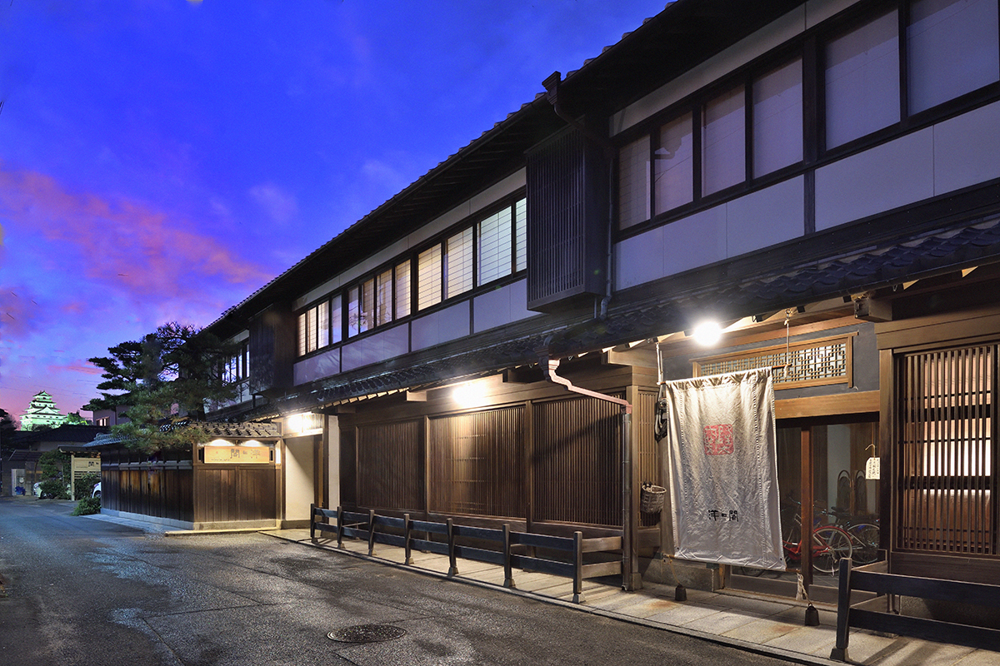
От Хакаты, главного района Фукуоки, сюда идёт поезд, который начинается как метро. Где-то по пути он выходит на поверхность, бежит вдоль моря, и когда за окном появляется сосновая роща Нидзи-но-Мацубара, вы уже в Карацу. Эта роща тянется по берегу и охраняется государством как особо ценный живописный памятник. В 2020 году всё больше путешественников выбирали скоростной автобус: от Хакаты до Карацу он идёт чуть больше часа.
Рёкан
Yoyokaku у сосновой рощи
Для автора, который много лет пишет о японских гостиницах, Yoyokaku стал образцом рёкана: слово «рёкан» в первую очередь напоминает ему именно этот дом. Рёкан стоит рядом с рощей Нидзи-но-Мацубара, и в воздухе здесь чувствуется морской ветер.
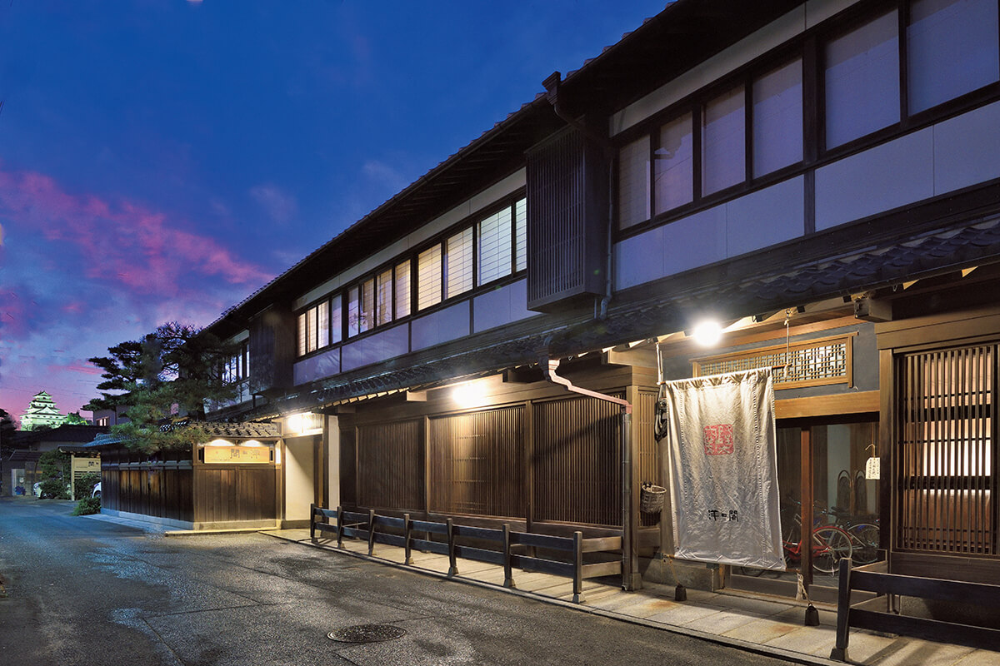
Главный корпус построили в 1912 году. Мимо красивых решётчатых окон гость проходит к входу, ступает по мокрым от воды камням, а на пороге его встречает мягкий свет бумажного фонаря. Сняв обувь, первым делом видишь цветы в большом сосуде. В начале лета это белые цветы магнолии с едва слышным благородным запахом. Цветы в рёкане ставит молодая хозяйка, и вазами ей служит та же керамика Карацу.
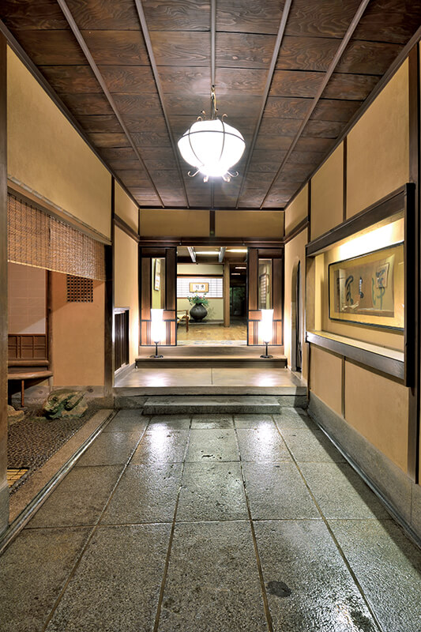
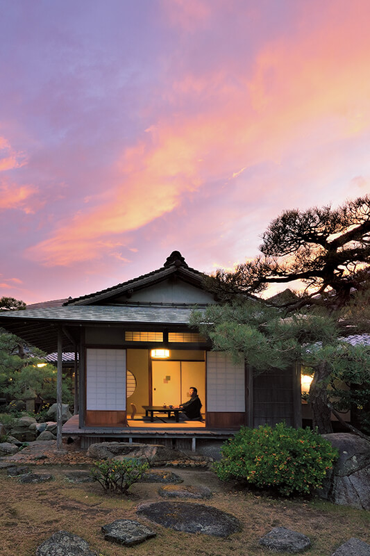
Надпись на вывеске у входа сделал Мосукэ Кавахара (1859–1929), уроженец префектуры Сага, который был председателем палаты представителей японского парламента. Комнату «Сайохимэ» построили в начале эпохи Сёва, в конце 1920-х годов, и назвали в честь Сайохимэ из Мацуры, героини одной из трёх великих легенд Японии.
Свой номер у автора постоянный, «Укидакэ», но хвалит он и «Гэнкай», и «Томбо». Все комнаты отделаны тонко и сохраняют облик старого японского рёкана. В «Томбо» две комнаты на 8 и 6 татами и широкая галерея, откуда виден весь японский сад. В ванной стоит купель из кипариса хиноки. Комнату проектировал архитектор, а на галерее стоит кресло для отдыха японского дизайнера Исаму Кэммоти.
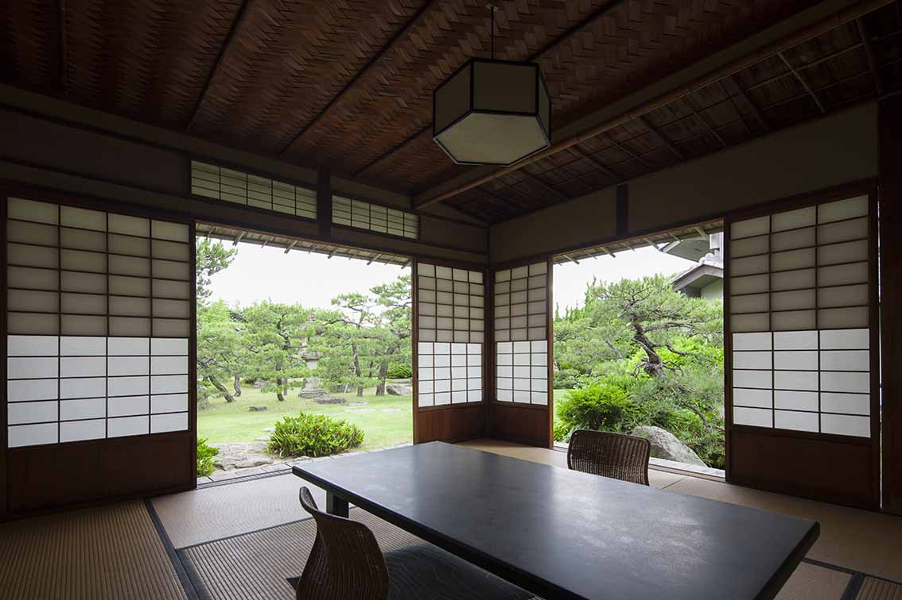
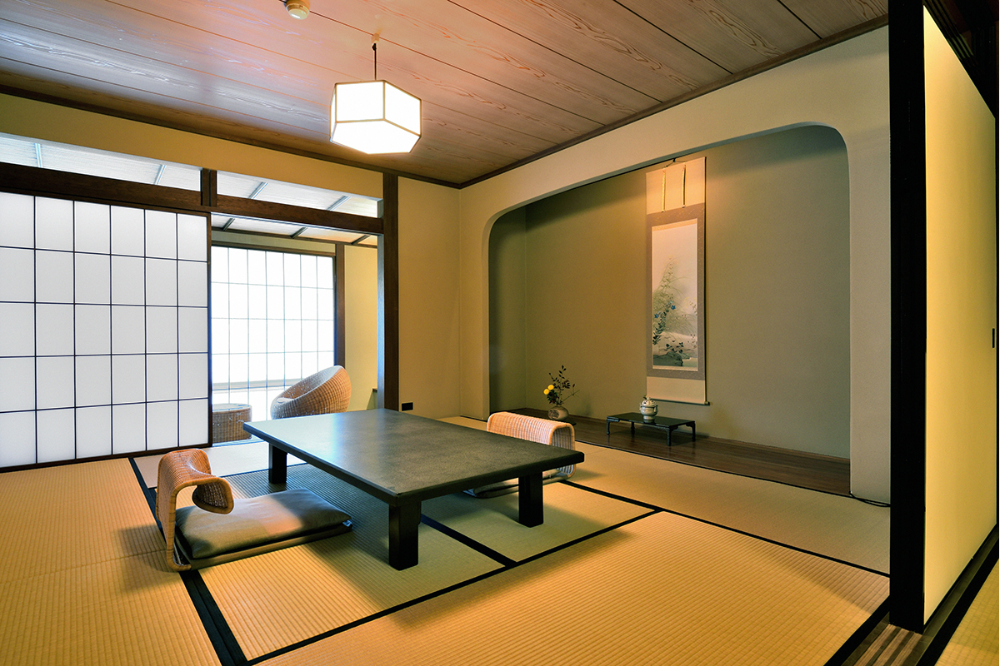
После чая в лобби можно идти в номер, подобрать юкату по росту и сразу отправиться в баню. Источник здесь не термальный, но воду греют с камнем бакухансэки, и от этого она мягче для кожи и хорошо прогревает. В большой бане можно вытянуться во весь рост и никуда не спешить.
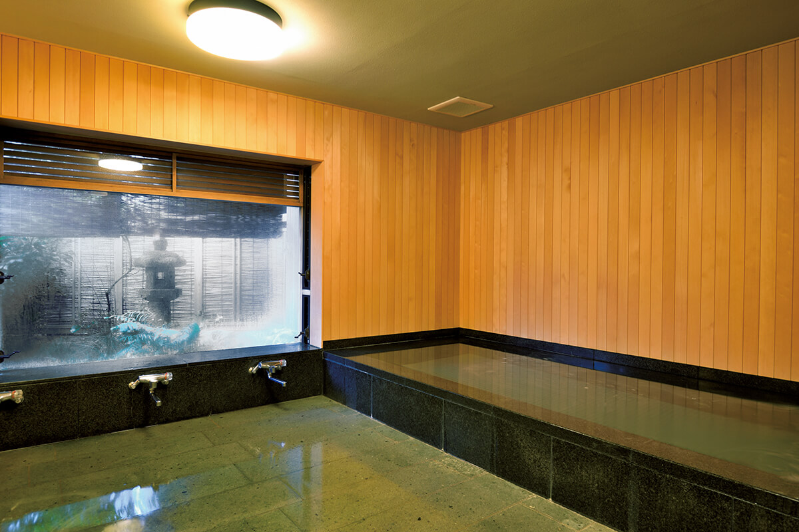
Галерея
Посуда трёх поколений Накадзато
Главное, чем живёт этот рёкан, это посуда. Прежний хозяин дружил с Такаси Накадзато, одним из самых известных мастеров керамики Карацу. Автор признаётся, что не знает другого рёкана, который был бы так же тесно связан с посудой.
Прямо в рёкане работают две галереи. Первая принадлежит мастерской «Рюта-гама»: здесь собрана посуда трёх поколений семьи Накадзато, которую отобрал хозяин рёкана. Это работы Такаси, его сына Таки и внука Кэнты. Вторая галерея, monohanako, показывает вещи, которые выбрала сама Ханако Накадзато, дочь Такаси. Понравившуюся чашку или тарелку можно купить на месте и тут же гадать, что в ней подать дома.
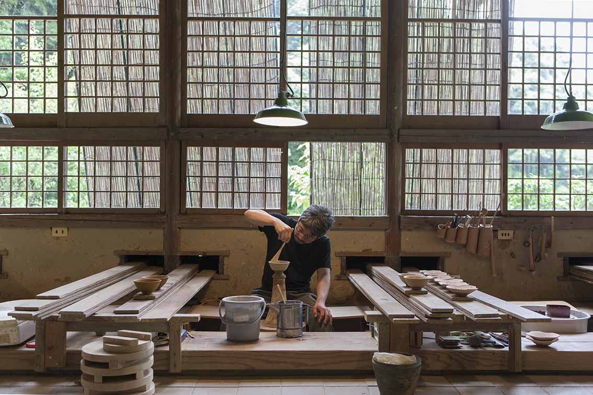
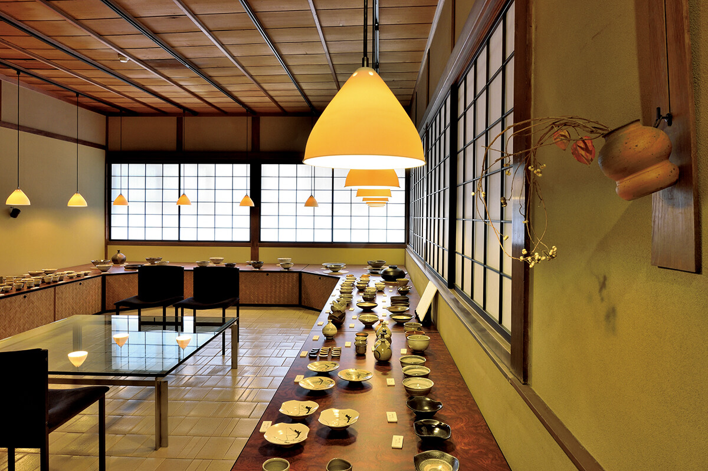
После галерей хочется увидеть, где эту посуду делают. В «Рюта-гама» можно купить работы и посмотреть, как мастера работают с глиной. В 2020 году мастерская несколько раз в год устраивала концерты: звучала барочная музыка, а гостей угощали блюдами в посуде «Рюта-гама».
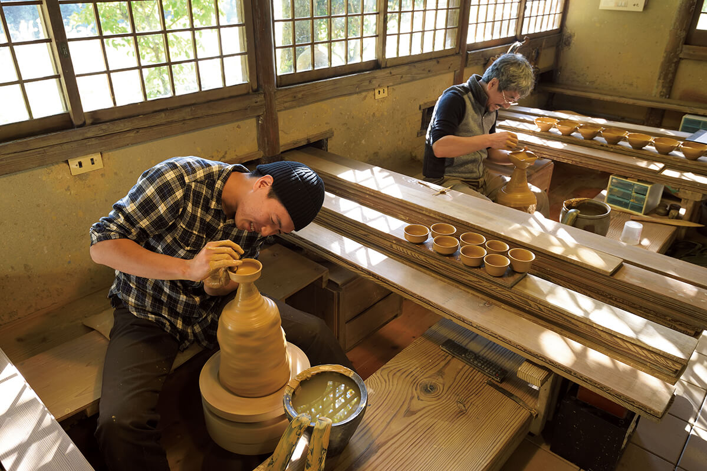
У «Рюта-гама» и monohanako общие корни, но стиль у них совсем разный. Керамика Карацу это глиняная посуда, и «Рюта-гама» продолжает эту линию, а monohanako работает и с фарфором. Удивляться нечему: чуть южнее Карацу лежат Имари и Арита, вместе с керамикой Набэсима они известны на всю страну как родина японского фарфора.
Ужин
Ара, окодзэ и чёрный вагю
Рёкан славится кухней, и ужин здесь главное событие вечера. Зимой готовят то, чем Yoyokaku известен больше всего: рыбу ара во всех видах. В некоторых местах её называют куэ. Эта белая рыба не уступает фугу: она хороша и сырой, и тушёной, и в горячем котле. Зимой подают и котёл с фугу.
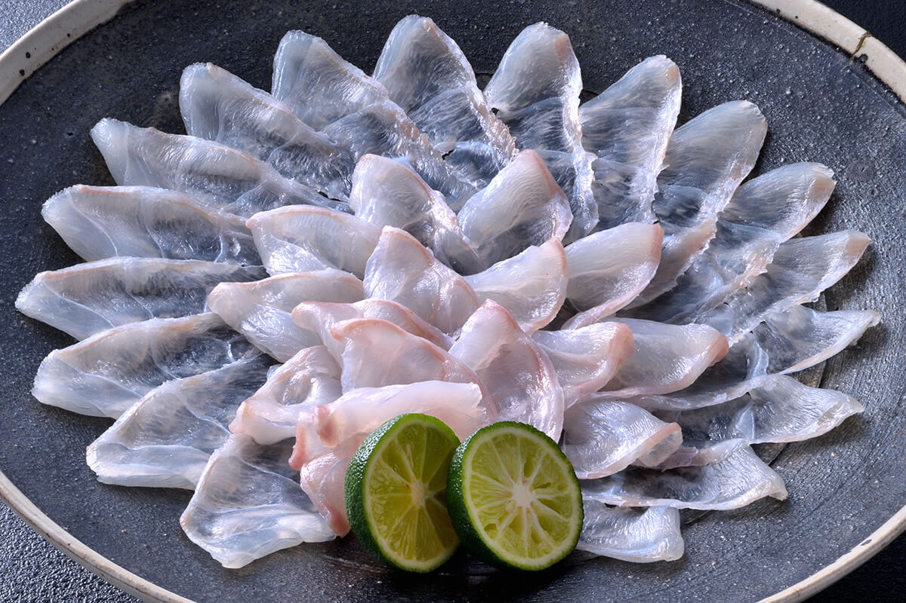
С весны до осени время окодзэ. Вкуснее всего эта рыба с июня по август, и по договорённости можно заказать ужин, где все блюда из неё.
Японская кухня, по мнению автора, становится законченной только в подходящей посуде. Обидно, когда хорошее блюдо приносят в случайной тарелке. В Yoyokaku еду подают прежде всего в посуде «Рюта-гама» и других достойных мастеров, и кухня с посудой здесь дополняют друг друга так же, как хозяин рёкана и гончар.
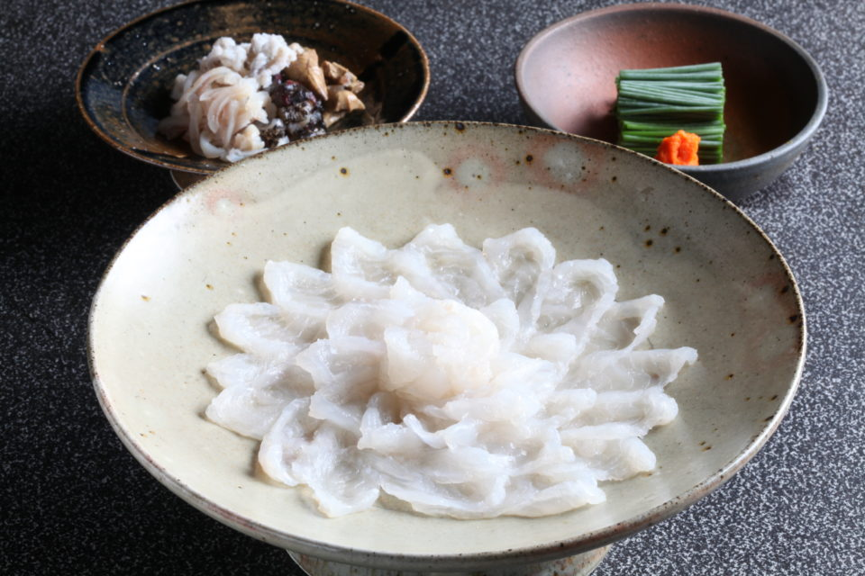
Если вы остаётесь на две ночи, один ужин стоит посвятить мясу. Сябу-сябу из чёрного японского быка подают круглый год по предварительному заказу. Рёкан говорит, что первым на Кюсю начал подавать это блюдо, около полувека назад по счёту 2019 года. Кунжутный соус готовят сами, он с кислинкой и лёгкий, поэтому мяса можно съесть сколько угодно.
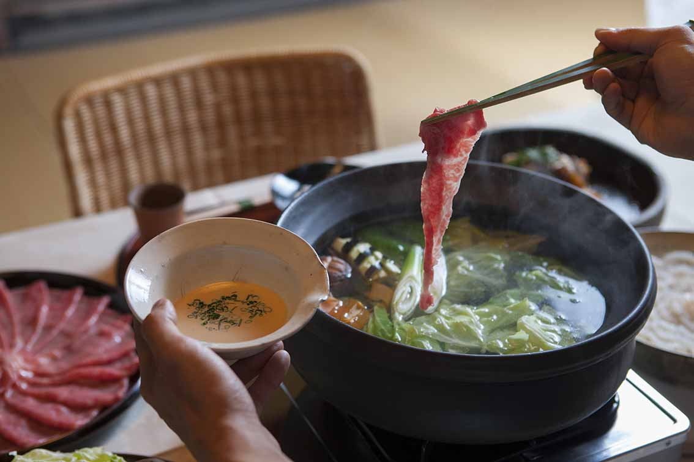
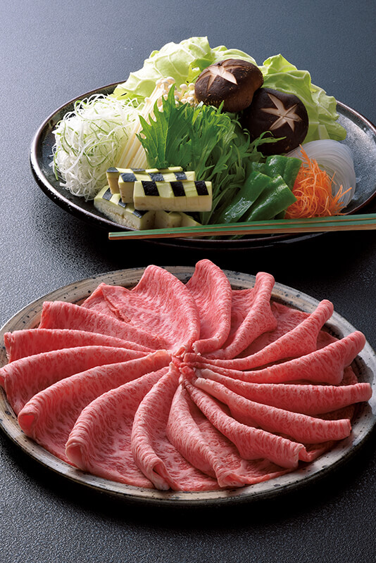
Новое фирменное блюдо рёкана это «нанбан-рикю-набэ». Для него берут говядину чёрных быков с северного Кюсю с умеренными мраморными прожилками. В бульон из комбу сначала кладут капусту, чтобы он стал слаще. Секретный кунжутный соус наливают в чашку керамики Карацу и взбивают бамбуковым венчиком, как взбивают чай на чайной церемонии: так он становится мягче и ароматнее. По вкусу добавляют острый перец и тёртый чеснок.
Завтрак
Мисо-суп, за которым просят добавку
Хороший рёкан, по словам автора, запоминается не только ужином, но и завтраком. Завтрак в Yoyokaku подают в столовой, начать можно в 7:30, 8:00 или 8:30.
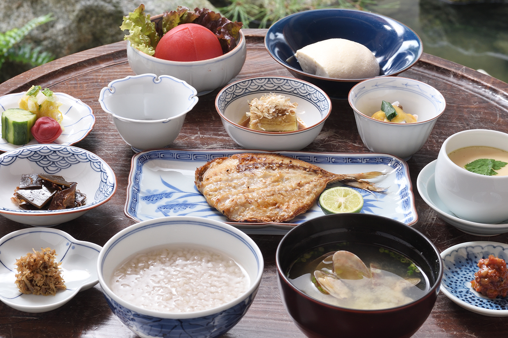
Мисо-суп здесь такой, что автор каждый раз просит добавку. Обычно его варят с моллюсками асари. Рядом и залив Ариакэ, и море Гэнкай, поэтому моллюски всегда пухлые, и их сок наполняет весь рот. Белый рис тоже есть, но основное блюдо это мягкая каша из ячменя: с каждой ложкой тело понемногу просыпается.
Маршрут
Три дня: суши, мастерские и утренний рынок
Автор советует останавливаться здесь хотя бы на две ночи. Для долгого постоя, по его словам, нужны две вещи: у поездки должна быть цель, а у рёкана разнообразная кухня, чтобы два ужина подряд не повторялись. Цель в Карацу очевидна: поездка по гончарным мастерским. Средний день остаётся на мастерские, а день приезда и день отъезда дают запас времени.
День первый. Обед стоит начать с суши в маленьком заведении «Эсаки», которое посоветует хозяин рёкана. Здесь работают только с рыбой из Карацу и могут сделать редкие суши, например с устрицами из Оуры. Отдельно хвалят ролл «такарамаки», начинка которого меняется каждый день. Суши подают по одному за стойкой, к ним местное сакэ, и, конечно, в керамике Карацу. В 2020 году обед стоил 2500 иен, ужин 3800 или 5500 иен. При заказе от четырёх человек можно было договориться и об обеде в будни. Цена при таком вкусе удивительно скромная.
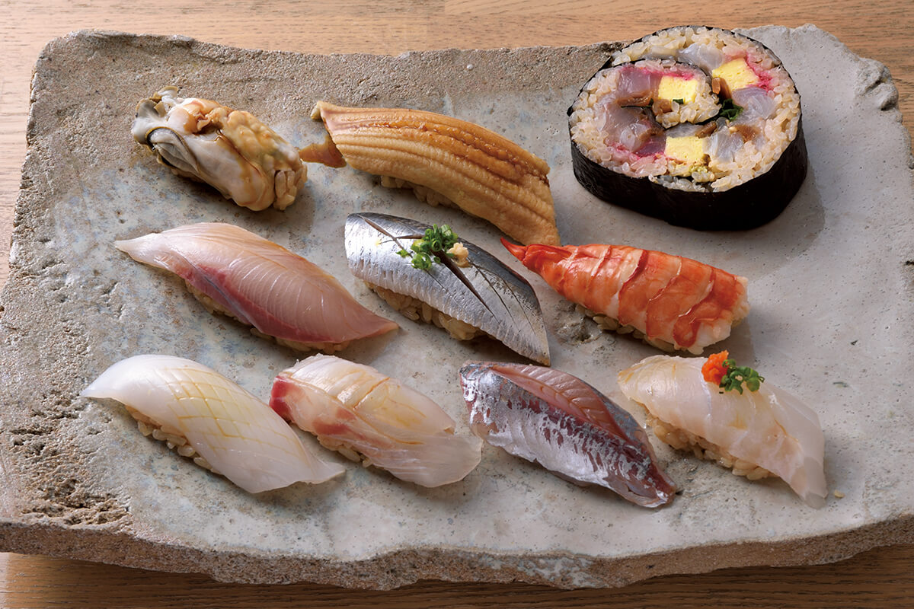
«Эсаки»
- Адрес
- префектура Сага, Карацу, Накамати, 1840-1
- Цены / Вход
- обед 2500 иен, ужин 3800 или 5500 иен
Потом заселение, баня, прогулка по галереям рёкана и первый ужин из ара.
День второй. После завтрака можно ехать в мастерские «Рюта-гама» и monohanako, а вернуться до темноты, чтобы успеть в баню и вспомнить за ужином всё, что удалось найти. Второй вечер мясной.
День третий. Можно встать пораньше и съездить на утренний рынок в Ёбуко, рыбацкий городок, известный ловом кальмаров. Обед автор провёл в небольшом ресторане Карацу, спрятанном от туристов. Простые треугольные онигири там оказались такими вкусными, что стали лучшим финалом поездки за посудой.
Yoyokaku
- Адрес
- префектура Сага, Карацу, Хигаси-Карацу, 2-4-40
- Телефон
- +81 955-72-7181
- Номера
- 19
- Заезд / выезд
- 15:00 / 10:00
- Цены / Вход
- от 27 500 иен за ночь с ужином и завтраком (с налогом и обслуживанием)
- Как добраться
- от станции JR Карацу 6–7 минут на такси
- Сайт
- yoyokaku.com
Фото: Тэруаки Цукуи.